iOS消息推送
iOS中的消息推送，相对来说，比较特殊一点。
因为iOS中的消息推送，首先是从你的消息推送服务器，发送到苹果官网的服务器，叫做APNS，然后再发送到你的iOS设备，比如iPhone，中的。
也因此，消息推送的时间，往往没法完全的保证，因为还要取决于APNS到你的iPhone的手机中的推送时间，虽然多数情况下较快，但是也还是有时候会比较慢的。
iOS的消息推送证书
iOS的app要支持消息推送的话，需要：
- （Xcode中）设置APP支持消息推送
- 申请相关的消息推送的证书
- 在消息推送服务器（比如JPush的后台管理页面）中（上传）配置对应的推送证书
且需要注意的是，iOS的消息推送证书分两种：
- 开发环境的消息推送证书：用于平时开发调试期间使用
- 正式（生产）环境的消息推送证书：用于生产环境，已上线的APP使用
- 理论上来说：生产环境的消息推送证书，在你创建到时候，就提示了，其实也可以被用于开发环境
- 只不过平时还是很少混用，以免开发环境推送的消息影响到线上的环境
- 理论上来说：生产环境的消息推送证书，在你创建到时候，就提示了，其实也可以被用于开发环境
生成消息推送所需证书:.p12文件
对于想要去申请获得消息推送所需的证书，简要概括步骤是：
- 登录苹果开发者网站后台管理页面
- 选择是Develop开发环境还是Production生产环境
- 选择APP ID
- 创建和上传CSR文件
- 生成
.cer证书文件 - 用Mac中的
钥匙串打开.cer证书文件 - 导出为
.p12推送证书文件- 期间需要设置证书的密码，记得保存好，以后万一给别人使用时，需要密码才能用
详细步骤如下：
登录苹果开发者网站后台管理页面
进入：苹果开发者 后台管理页面
会自动跳转到：
Sign in with your Apple ID - Apple Developer
之类的地址，输入Apple ID和密码即可登录
选择是Develop开发环境还是Production生产环境
点击Certificates右上角的加号+：
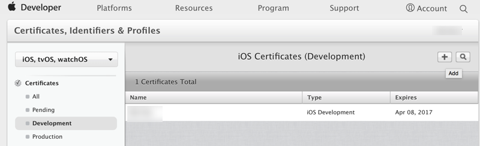
然后选择对应的环境：
- 开发环境：选择
Development->Apple Push Notification service SSL (Sandbox)- 用于平时在开发环境测试消息推送使用
- 生产环境：选择
Production->Apple Push Notification service SSL (Sandbox & Production)- 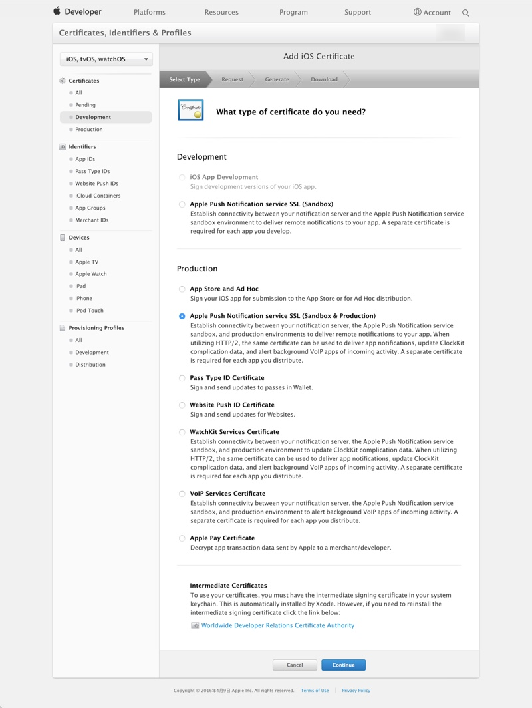
选择对应的APP ID
然后选择对应的APP ID：
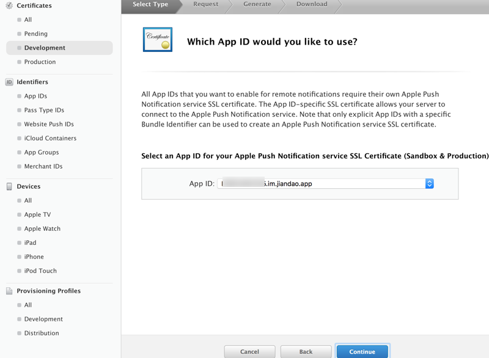
表示这个消息推送证书是给哪个APP用的。
创建和选择CSR文件
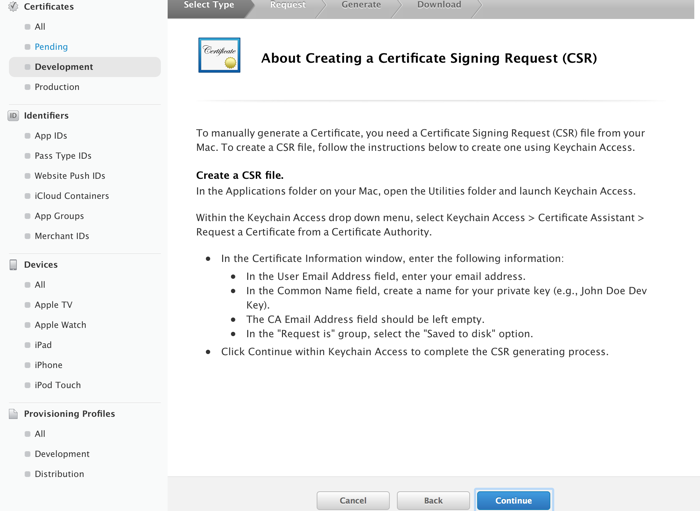
点击Continue继续：
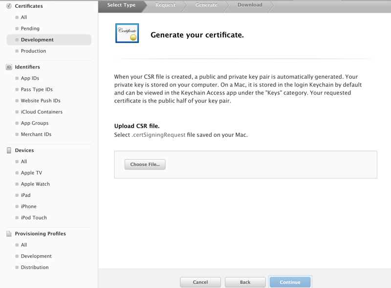
然后选择之前创建好的CSR文件：
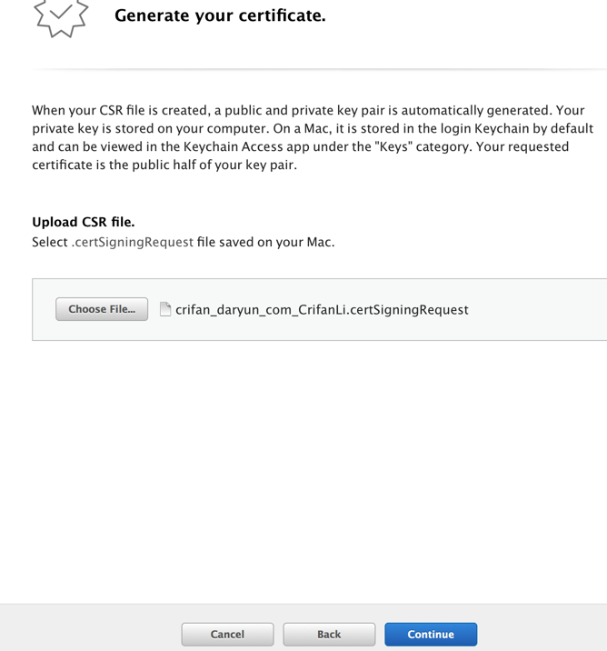
然后即可成功创建对应的证书：
然后可以点击下载得到.cer文件：
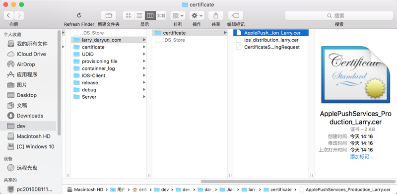
Mac中创建CSR文件
如果没有CSR文件，则去Mac中创建：
去Mac中打开钥匙串，然后:
钥匙串访问 -> 证书助理 -> 从证书颁发机构请求证书：
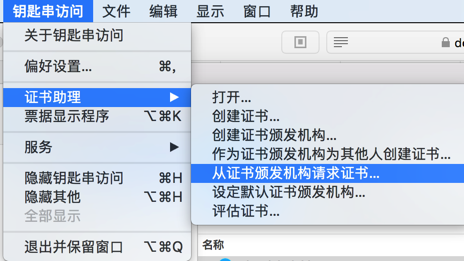
继续去在证书助理中，填写信息：
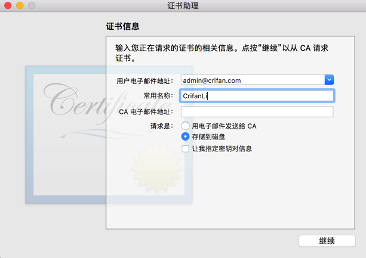
然后继续，就可以创建成功了：
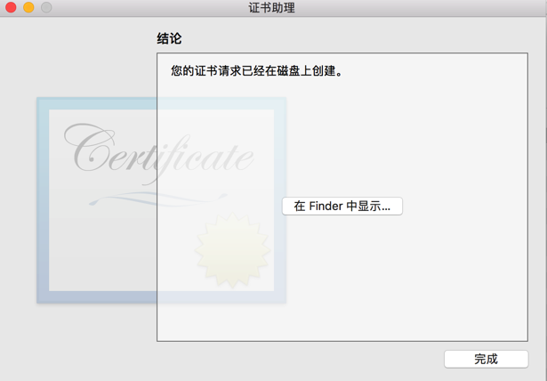
然后找到刚创建好的.certSigningRequest文件，比如crifan_daryun_com_CrifanLi.certSigningRequest
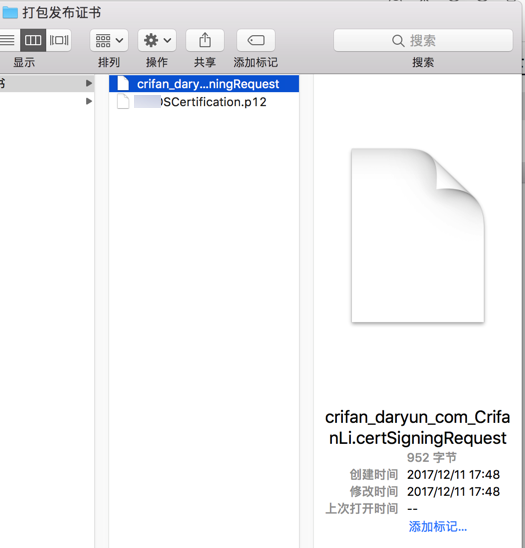
用钥匙串把.cer证书转换导出为.p12消息推送证书文件
Mac中用钥匙串访问打开.cer文件：
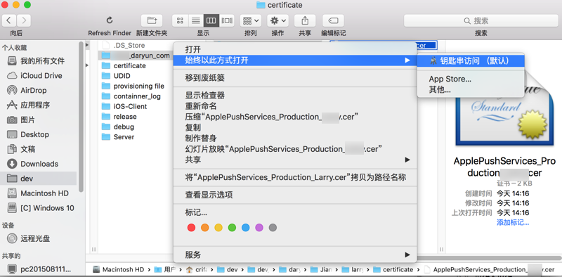
然后右击该证书，选择导出xxxx：
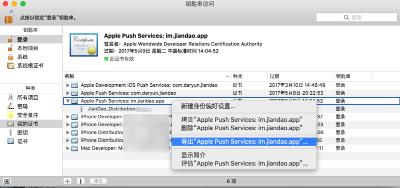
即可去导出.p12文件:
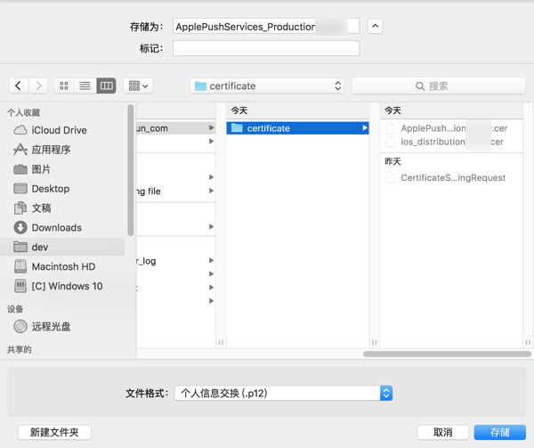
导出时需要设置密码:
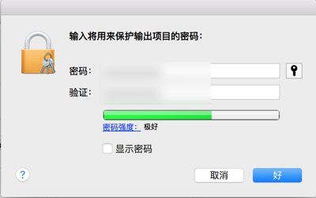
然后即可得到消息推送所需要的p12证书文件：
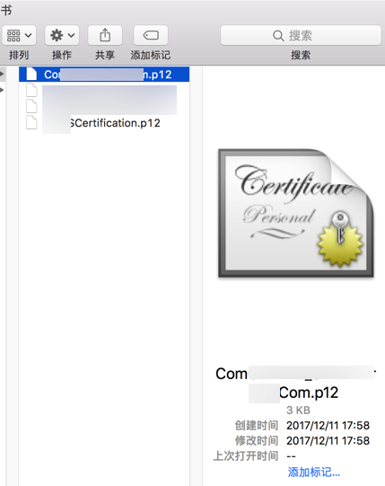